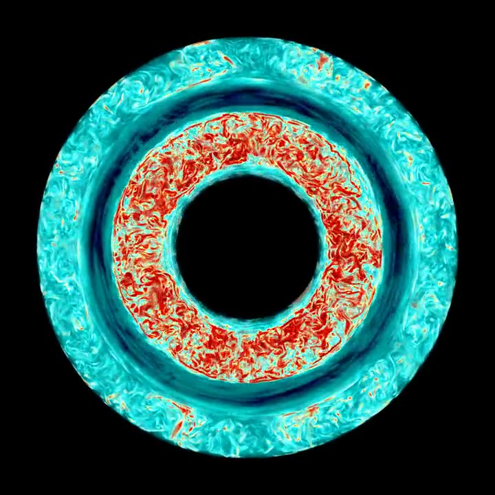
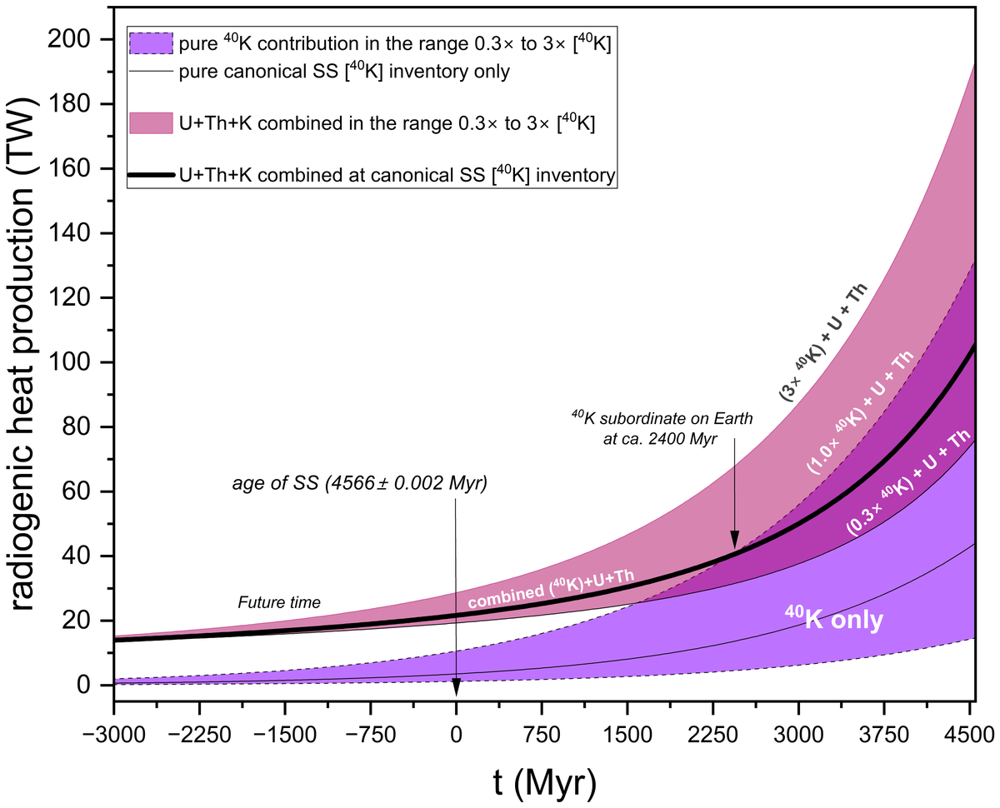
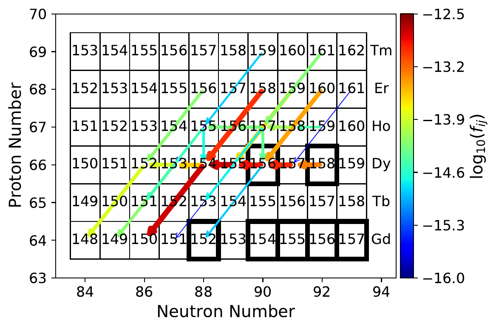
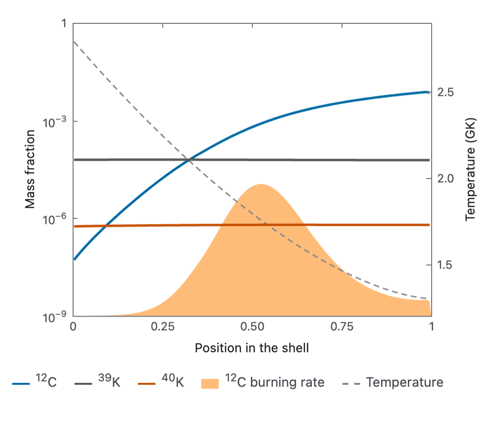

3D hydrodynamics
Nuclear burning in 3D
I implemented nuclear burning in the 3D hydrodynamic code PPMstar to see how hydro responds to nuclear physics.
More on this →PhD student in Astronomy @ UVic
I study how convection deep inside massive stars shapes nucleosynthesis. My work combines 3D hydrodynamic simulations, nuclear reaction networks, and observations of supernova remnants. I have a particular love for the dynamic nucleosynthesis site oxygen-carbon shell mergers.
I work with Falk Herwig and I am a member of the NuGrid collaboration.
1D stellar evolution calculations model convection as a diffusion process according to mixing length theory. 3D simulations significantly diverge both in the shape and magnitude of mixing. My research shows how abundance patterns are imprinted by mixing physics and asks how observations can constrain our understanding of mixing.

I implemented nuclear burning in the 3D hydrodynamic code PPMstar to see how hydro responds to nuclear physics.
More on this →
Shell mergers can produce a lot of 44Ti before the explosion, and this can be checked against Cassiopeia A.
More on this →
The 40K produced in shell mergers, a really important heat source for rocky planets, is really sensitive to mixing physics.
More on this →
In oxygen-carbon shell mergers, uncertainties in the 3D mixing change the production of the p nuclei as much as nuclear physics uncertainties do.
More on this →
Explore this simple, interactive model of an O shell ingesting C to see how 40K depends on mixing.
Open the simulator →